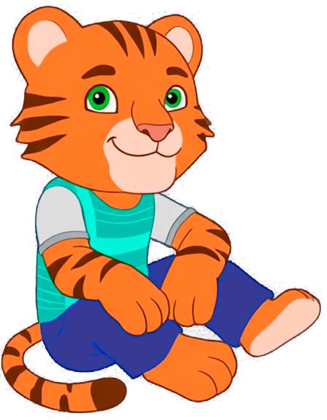

«НАУК(А)РТ» — лаборатория научных роликов. Мы создаём сообщество молодых научных коммуникаторов, которые превращают физику, химию и биологию в зрелищный и понятный контент для школьников и студентов.

«НАУК(А)РТ» впервые в Ульяновской области объединяет открытый конкурс научных видеороликов и постоянно действующий Клуб научных коммуникаторов.
Постоянно действующее сообщество: ежемесячные встречи, 4-дневный интенсив для 20 мотивированных участников, мастер-классы.
Открытый конкурс научных видеороликов и контента для школьников 7–11 классов и студентов 1–2 курсов. Пять номинаций.
10 эталонных научно-популярных видеороликов станут частью открытой библиотеки — бесплатного образовательного ресурса.
Завершающее событие: интерактивное научное шоу, кинопоказ лучших работ и награждение победителей.
Февраль — ноябрь. Ежемесячные встречи, интенсив, создание 10 эталонных роликов.
Апрель — октябрь. Привлечение новых участников, пять номинаций, методическая поддержка.